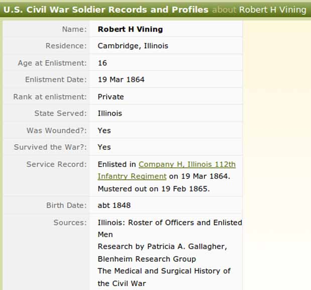
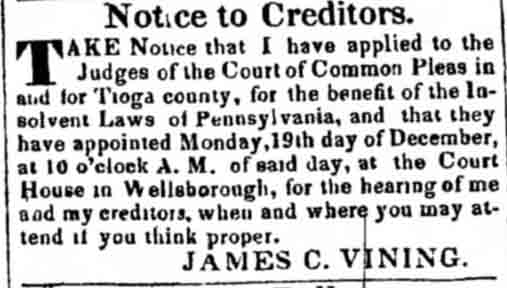

Census Data
| 1840 | 1850 | 1860 | 1870 | 1875 | 1880 | |
| James C. Vining | 20–30 [see note below] |
38 | ? | 54 | dead | |
| Abigail (Willoughby) Vining | ? | 28 | ? | 50 | 54 | 59 [see note below] |
| Martha Vining | ? | 11 | ? | [living? in separate household] | ||
| Abigail Vining | 9 | ? | [living? in separate household] | |||
| Robert H. Vining | 2 | ? | [living? in separate household] | |||
| Richard Vining | ? | 18 | 18 [sic] | [living? in separate household] | ||
| Emma Vining | ? | 10 | 15 | [living? in separate household] | ||
| George G. Vining | 7 | 12 | 17 | |||
| Laura E. Vining | 2 | 7 | 12 |


Military Data
Military record of Robert H. Vining, son of James C. Vining and Abigail Willoughby:
Personal Data
Newpaper notice to creditors (from Tioga Eagle (Wellsboro, Pennsylvania), Wednesday, 26 October 1842, page 3, column 4):